Экраны системы и информация, которую получает каждая роль: от взвешивания на кухне до квартального отчёта и CO₂.
Жүйе қалай жұмыс істейді: экрандар және әр рөл алатын ақпарат
Бір сайт — төрт рөл
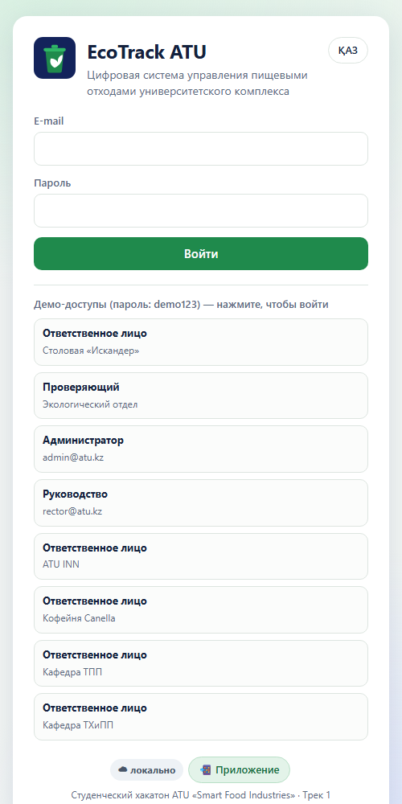
Ас үйде 3 рет басып жазу
📱 Ответственное лицо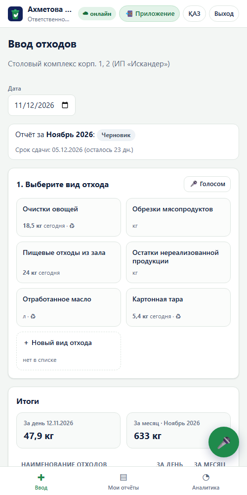
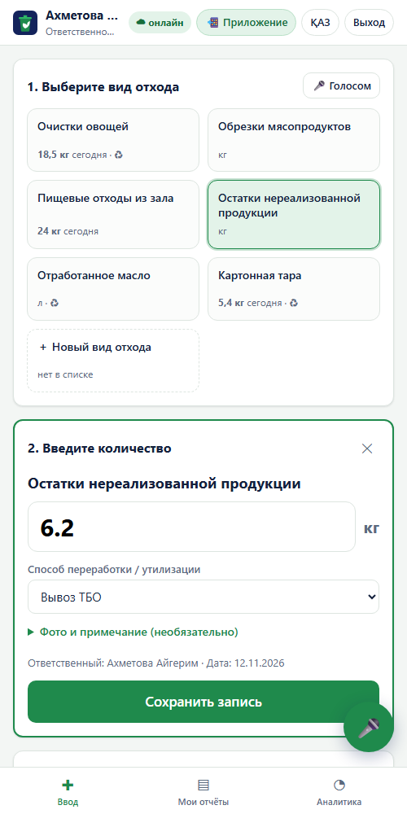
Бір сөйлем — бірнеше жазба (қазақша да)
📱 Ответственное лицо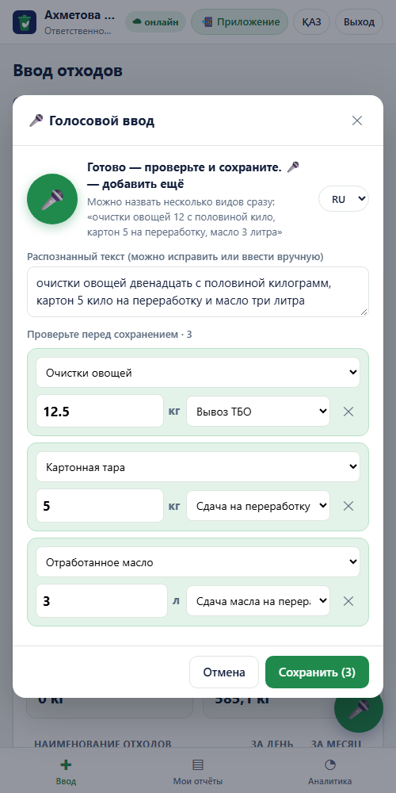
Айлық есеп — бір әрекетпен
📱 Ответственное лицо✅ Проверяющий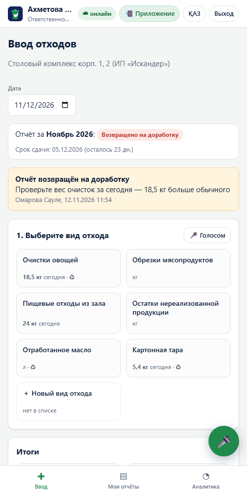
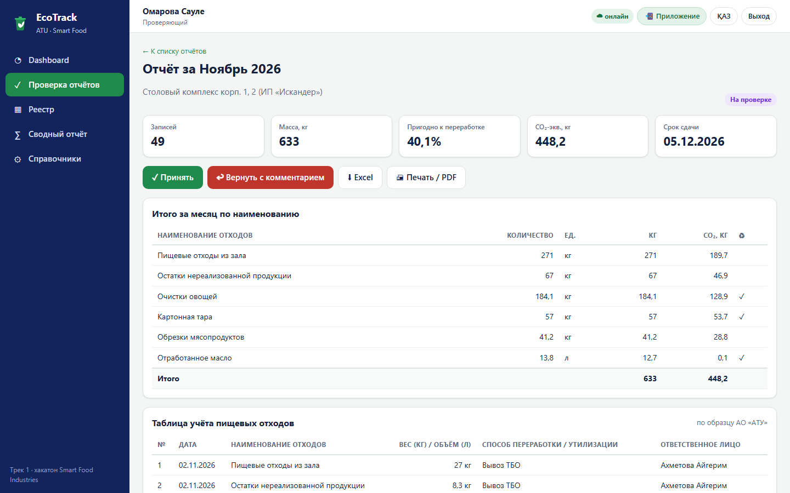
Кім, қашан, не істеді және неге
✅ Проверяющий📊 Руководство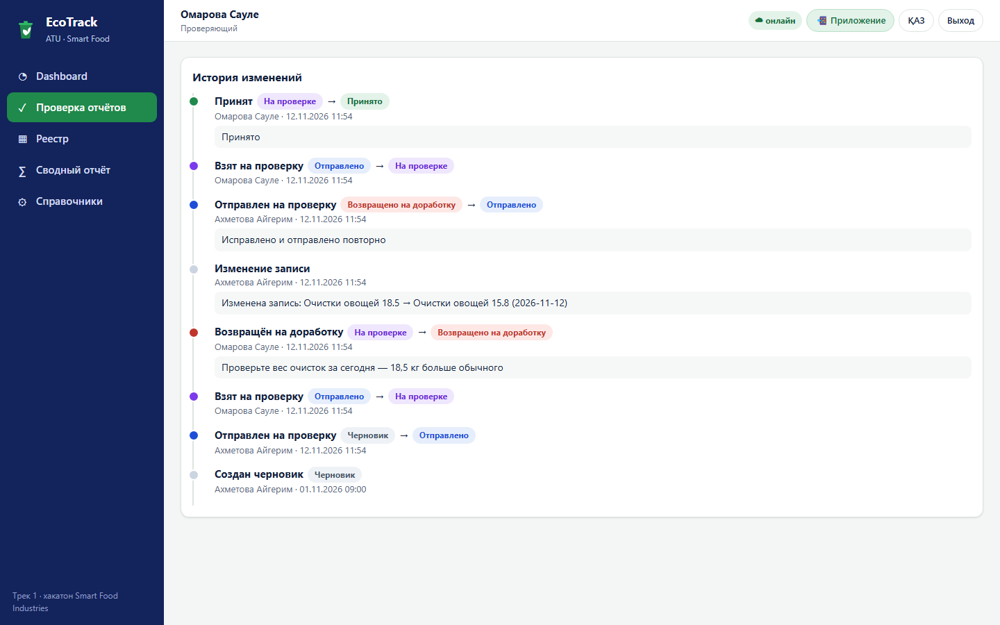
Барлық қабылданған деректер бір жерде
✅ Проверяющий📊 Руководство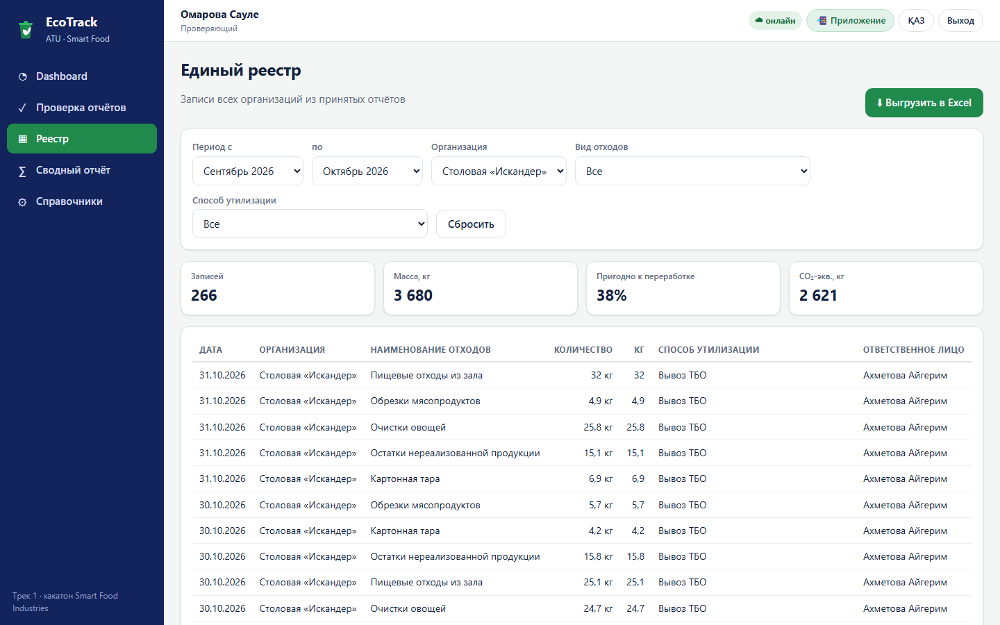
Университет бойынша жағдай бір минутта
📊 Руководство✅ Проверяющий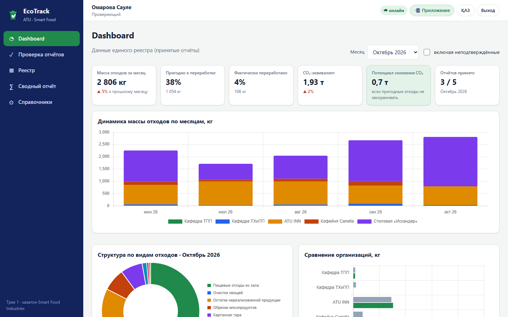
Құрылым, салыстыру, кәдеге жарату тәсілдері
📊 Руководство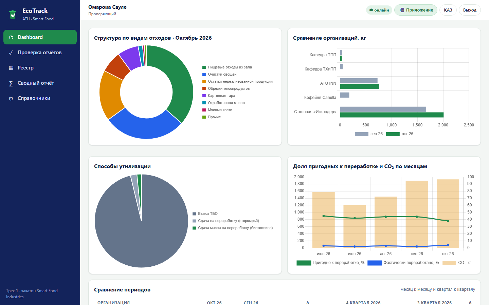
Жүйе ақша қай жерде жоғалатынын өзі көрсетеді
📊 Руководство📱 Организации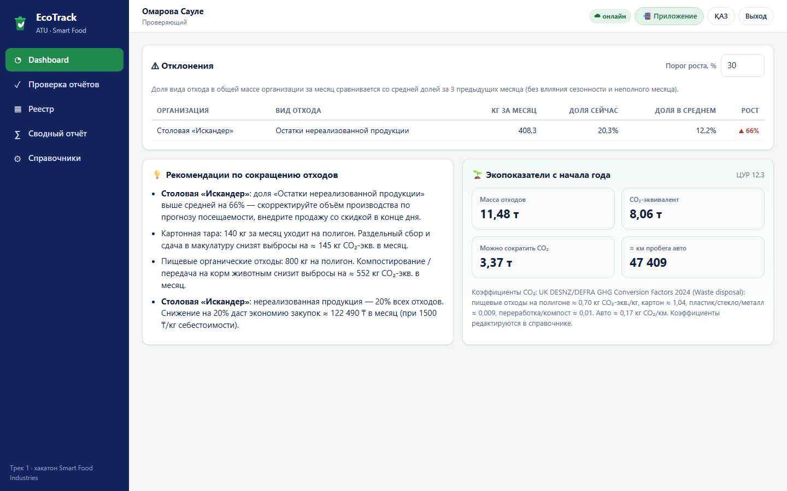
Тоқсандық есеп бір батырмамен
✅ Проверяющий📊 Руководство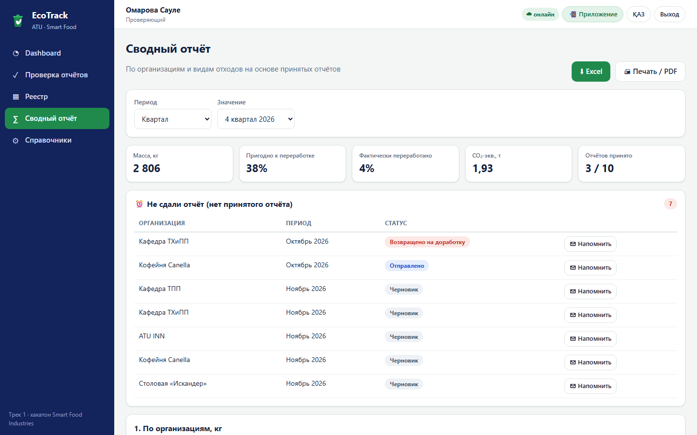
Жаңа ұйым — бағдарламашысыз
⚙ Администратор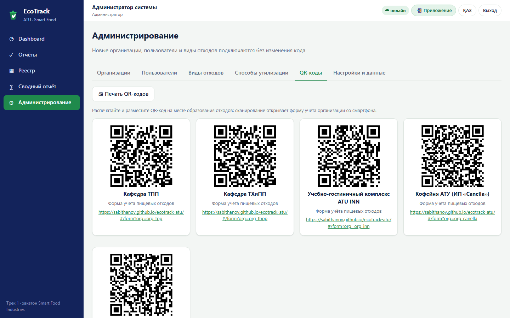
Кез келген телефонда қосымша сияқты жұмыс істейді
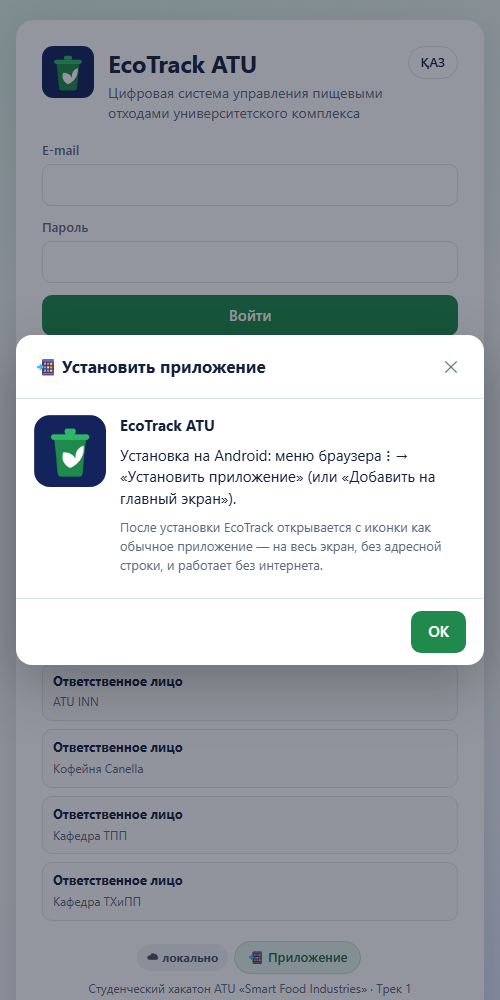
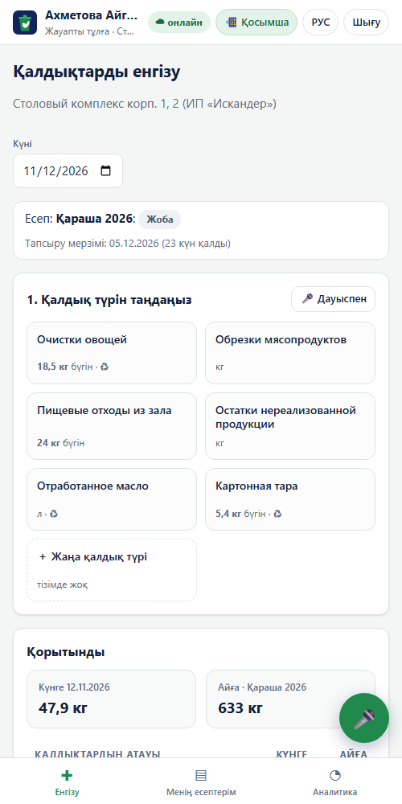
Әр рөл қандай ақпарат алады
| Информация | 📱 Ответственное лицо | ✅ Проверяющий | ⚙ Администратор | 📊 Руководство |
|---|---|---|---|---|
| Итоги за день и месяц | своя организация | все | все | все |
| Статус отчёта и комментарии | ✓ | ✓ + решение | ✓ | ✓ |
| История изменений | ✓ | ✓ | ✓ | ✓ |
| Единый реестр с фильтрами | — | ✓ | ✓ | ✓ |
| Сводный отчёт и Excel / PDF | — | ✓ | ✓ | ✓ |
| Dashboard: 5 графиков и KPI | своя организация | ✓ | ✓ | ✓ |
| Отклонения и рекомендации | своя организация | ✓ | ✓ | ✓ |
| CO₂ и экопоказатели | ✓ | ✓ | ✓ | ✓ |
| Кто не сдал отчёт | свой срок | ✓ + напомнить | ✓ | ✓ |
| Справочники, пользователи, QR | новый вид отхода | виды отходов, QR | всё | — |